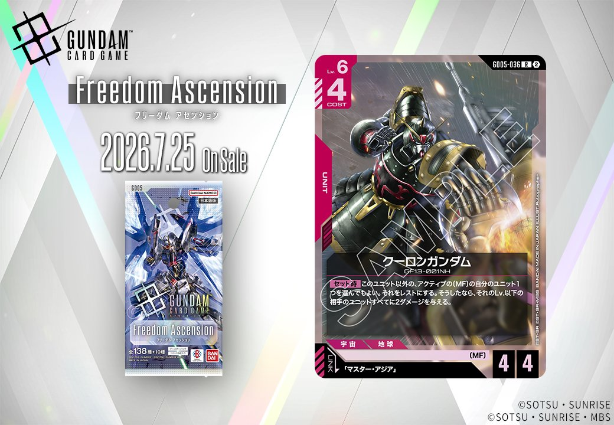

2026年7月25日発売のGD05から、赤のUNIT「ゴッドガンダム」（GD05-036）が収録されます。このカードは「マスター・アジア」とのリンクが設定されており、GD05の戦術の一角を担うカードとして登場します。

ゴッドガンダム (GD05-036)
| 色 | 赤 | タイプ | UNIT |
| Lv | 6 | コスト | 4 |
| AP | 4 | HP | 4 |
| 特徴 | 〔MF〕 | ||
| リンク条件 | 「マスター・アジア」 | ||
効果: 【セット時】このユニット以外の、アクティブの〔MF〕の自分のユニット1つを選んでもよい。それをレストにする。そうしたなら、それのLv.以下の相手のユニットすべてに2ダメージを与える。
ゴッドガンダムは、セット時に自軍のアクティブ状態のMFユニットをレストにすることで、そのユニットのLv.以下の相手ユニット全体に2ダメージを与える範囲除去能力を持つ。コスト4でAP4/HP4という標準的なスタッツながら、MF特徴を活かした展開から一気に盤面を制圧できるため、同日発売のシャイニングガンダムやガンダムローズとの連携が期待できる。マスター・アジアとのリンクにより、MFデッキの新たな切り札として活躍しそうだ。
関連カード
-
 ガンダムローズ(GD05-044)NEW赤系 — 同色・共通特徴: MF（新カード）
ガンダムローズ(GD05-044)NEW赤系 — 同色・共通特徴: MF（新カード） -
 シャイニングガンダム(GD05-042)NEW赤系 — 同色・共通特徴: MF（新カード）
シャイニングガンダム(GD05-042)NEW赤系 — 同色・共通特徴: MF（新カード） -
 格闘戦(ST03-013)赤系デッキ内採用率24.7% (792デッキ)
格闘戦(ST03-013)赤系デッキ内採用率24.7% (792デッキ) -
 GQuuuuuuX（オメガ・サイコミュ起動時）(GD03-034)赤系デッキ内採用率21.4% (684デッキ)
GQuuuuuuX（オメガ・サイコミュ起動時）(GD03-034)赤系デッキ内採用率21.4% (684デッキ) -
 戦技の向上(GD03-109)赤系デッキ内採用率17.2% (551デッキ)
戦技の向上(GD03-109)赤系デッキ内採用率17.2% (551デッキ)